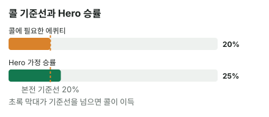

안녕하세요. 오늘은 상대가 작게 벳했을 때를 볼게요.
턴에 상대가 팟의 3분의 1만 툭 던졌어요. 금액이 작으니 "이 정도면 그냥 콜" 하고 손이 먼저 나가기 쉽죠. 오늘은 작은 벳이 정말 얼마나 싼지, 그리고 리버가 남은 턴 콜은 리버 콜과 무엇이 다른지를 숫자로 따라가 볼게요.
이 글에서 배울 것
- 팟의 3분의 1 벳이면 필요 에퀴티가 왜 5번 중 1번(20%)인지 직접 따져 보기
- 턴에서 "이길 확률"은 리버 카드 한 장까지 넣은 숫자라는 것
- 리버에 또 벳이 올 수 있는 턴 콜에는 어떤 조건이 붙는지
오늘의 핸드
Hero (빅블라인드 자리 · 스택 100BB)


프리플랍
상대(BTN) 2.5BB 오픈 → SB 폴드 → Hero 콜
팟 5.5BB
플랍 · 팟 5.5BB


Hero 체크 → 상대 1.75BB 벳(팟의 약 3분의 1) → Hero 콜
Hero는 세컨드 페어예요. 보드에서 두 번째로 높은 카드 9와 짝이 맞았죠. T가 들어간 페어를 가진 상대에게는 져요.
턴 · 팟 9BB


Hero 체크 → 상대 3BB 벳(팟의 3분의 1) → Hero는 콜? 폴드?
2가 나와도 Hero 핸드 이름은 그대로 세컨드 페어예요. 보드 네 장의 무늬가 다 달라서 플러시는 아예 나올 수 없어요. 다만 22는 셋, 9-2·4-2는 투페어가 돼서 이 카드로 Hero를 앞질렀어요.
결론부터 말할게요. 오늘 가정에서는 이번 턴 결정만 보면 콜이 이득입니다.
남은 베팅이 있어 실제 결과는 달라질 수 있어요. 그래서 오늘은 콜로 얼마를 벌지 따지는 대신 에퀴티 vs 필요 에퀴티로만 판정해요. 돈으로 따지는 기대값은 따로 배워요.
턴이라서 리버에 카드도 한 장 더 나오고, 벳도 또 올 수 있어요. 이 점이 리버 콜과 무엇이 다른지 아래에서 따로 볼게요.
1단계. 콜하려면 몇 번 이겨야 하나 (필요 에퀴티)
용어 다시 한 번
에퀴티 = 이 팟에서 이길 확률이에요. 필요 에퀴티는 콜해서 본전이 되려면 최소한 이 정도는 이겨야 한다는 확률이고요.
비유: 입장료가 싼 놀이기구
작은 벳 콜은 입장료가 싼 놀이기구예요. 입장료(Hero 콜)는 3BB인데, 이기면 원래 팟 9BB와 상대 벳 3BB를 합친 12BB가 순이익으로 남아요.
입장료에 비해 상품이 크니, 가끔만 이겨도 남겠죠. "몇 대 1"로 말하면 12 ÷ 3 = 4, 4 대 1이에요. 4번 지고 1번 이기면 본전이라는 뜻이에요.
공식으로 확인
B06에서 배운 공식 그대로예요. 우리가 낼 돈 ÷ 콜한 뒤 전체 팟.
필요 에퀴티 = 3(Hero 콜) ÷ (9(원래 팟) + 3(상대 벳) + 3(Hero 콜)) = 3 ÷ 15 = 20%
5번 중 1번만 이기면 본전이에요. 4 대 1에서 4 + 1 = 5번 중 1번, 같은 이야기죠. 이 20%를 오늘은 콜의 기준선이라고 부를게요.
3분의 1 벳은 언제나 5번 중 1번
이 20%는 팟 크기와 상관없어요. 팟을 3, 벳을 1로 놓아 볼게요. 콜한 뒤 팟은 3 + 1 + 1 = 5, 우리가 낼 돈은 1이에요.
1 ÷ (3 + 1 + 1) = 0.2
그래서 상대가 팟의 3분의 1을 걸면, 금액이 얼마든 바로 "5번 중 1번"이 떠오르면 돼요. 다른 벳 크기의 기준선과 한 표로 나란히 놓는 건 다음 글 B15에서 해요.
2단계. 오늘의 가정 — Hero가 이길 확률
지금 Hero를 이기는 핸드
보드 T♦ 9♣ 4♥ 2♠에서 Hero의 9-8을 이기는 핸드를 빠짐없이 보면 이래요.
- T가 들어간 페어(예: A♠T♣, K♥T♦)
- 9 페어에 키커가 더 높은 핸드: A-9, K-9, Q-9, J-9 (키커는 페어가 같을 때 승부를 가르는 나머지 카드예요)
- 보드보다 높은 포켓페어 JJ·QQ·KK·AA
- 셋(포켓페어가 보드 한 장과 맞아 같은 숫자 3장): TT·99·44·22
- 투페어(손의 두 장이 보드 두 장과 각각 짝): T-9, T-4, T-2, 9-4, 9-2, 4-2
턴까지는 스트레이트도 플러시도 없어서, 지금 Hero를 이기는 핸드는 이게 전부예요. 다른 무늬의 9-8을 든 상대와는 똑같은 핸드라 팟을 나눠요(찹).
지금은 Hero가 이기지만 리버에 뒤집힐 수 있는 핸드
반대로 지금은 Hero가 앞서지만, 리버 한 장에 Hero를 앞지를 수 있는 핸드도 있어요. 묶음으로 보면 이래요.
- 9 페어에 키커가 낮은 핸드: 9-7, 9-6, 9-5, 9-3. 리버에 키커 숫자가 오면 투페어
- 작은 포켓페어: 33, 55, 66, 77, 88. 리버에 같은 숫자가 오면 셋
- 보드보다 높은 카드 두 장(A-K, A-Q, K-Q 등): 리버에 그 숫자가 오면 Hero보다 높은 페어
- 스트레이트 드로우(한 장만 더 오면 스트레이트가 되는 핸드): Q-J·8-7·J-8·5-3처럼 양쪽 끝 어느 쪽이 와도 되는 것, K-Q·J-7·Q-8·7-6처럼 가운데 한 숫자만 기다리는 것
Q-J처럼 두 묶음에 다 걸치는 핸드도 있어요. 8·K가 오면 스트레이트, Q·J가 오면 Hero보다 높은 페어가 돼요.
Hero도 좋아질 수 있어요
Hero 쪽도 리버에 좋은 카드가 있어요. 다만 그 카드가 상대도 같이 도울 수 있다는 게 핵심이에요.
- 리버 9: Hero는 9 세 장(손 한 장 + 보드 두 장, 이런 걸 트립스라고 해요)이 돼요. T 페어, JJ~AA, T-4·T-2·4-2를 다시 이겨요. 하지만 A-9~J-9는 키커가 더 높은 트립스가 되고, T-9·9-4·9-2와 TT·44·22는 풀하우스가 돼서 여전히 Hero를 이겨요
- 리버 8: Hero는 9-8 투페어가 돼요. T 페어(T-8은 빼고), JJ~AA, A-9~J-9, 9-4·9-2·4-2를 다시 이겨요. 그런데 같은 8이 Q-J(8-9-T-J-Q)·J-7(7-8-9-T-J)·7-6(6-7-8-9-T)에게는 스트레이트를, 88에게는 셋을, T-8에게는 Hero보다 높은 T-T-8-8 투페어를 만들어 줘요
25%라는 가정
이 핸드들이 각각 몇 가지씩이고 상대가 그중 무엇으로 벳하는지 세는 건 중급 I27에서 배워요. 오늘은 그 결과를 "리버까지 갔을 때 Hero가 이길 확률은 25%", 즉 4번 중 1번이라고 가정할게요. 위 목록에서 계산해 낸 숫자가 아니라, 계산을 대신하는 가정이에요.
앞에서 본 리버 콜 글들(88 하프팟 콜, Q 팟벳 폴드)과 다른 점이 여기 있어요. 리버에서는 카드가 다 나와서 "상대가 무엇을 들었나"만으로 승률이 정해졌죠. 턴에서는 거기에 리버 카드 한 장이 누구를 도울지까지 섞여 있어요.
3단계. 나란히 놓고 비교하기
B14에서 연습한 그 비교예요.
| 확률 | |
|---|---|
| 콜에 필요한 에퀴티 | 20% |
| Hero 가정 승률 | 25% |

25% > 20%. 기준선은 5번 중 1번인데 Hero는 4번 중 1번을 이겨요. 그래서 이번 턴 결정은 콜이에요.
왜 그럴까: 턴 콜은 "리버 카드 한 장을 사는 것"이에요
무엇을 사는지 보면
리버에서 콜은 "지금 상대 핸드를 이기냐"를 확인하는 값이었어요. 턴에서 콜은 조금 달라요. 3BB를 내고 리버 카드 한 장을 보는 권리를 사는 거예요.
그래서 오늘의 25%에는 세 가지가 섞여 있어요. 지금 이기고 있는 상대(키커 낮은 9 페어, 작은 포켓페어, 높은 카드, 드로우)를 리버까지 지켜 내는 몫, 지고 있는 상대를 리버 9나 8로 뒤집는 몫, 그리고 그 9나 8이 상대도 도와서 잃는 몫이에요. 리버 8처럼 Hero에게 좋은 카드가 Q-J에게는 스트레이트를 주니까요.
"이번 한 번"이라고 말하는 이유
이 비교는 리버에 아무 벳 없이 쇼다운(마지막에 카드를 까서 승부를 가리는 것)까지 간다고 보고 한 계산이에요. 그런데 실제로는 리버에 상대가 또 벳할 수 있죠.
- 리버에 상대가 또 걸면, Hero는 새 기준선으로 다시 정해야 해요
- 그때 Hero가 폴드하면, 25% 안에 들어 있던 "이기는 경우" 일부를 쇼다운까지 못 가져가요
- 반대로 Hero가 리버에 또 콜하면, 질 때 잃는 돈도 3BB보다 커져요
그래서 "리버 카드 한 장을 사는 값"이 3BB로 끝난다고 볼 수 있을 때만 25%와 20%를 바로 비교할 수 있어요. 결론 바로 아래에 "남은 베팅이 있어 실제 결과는 달라질 수 있어요"를 적은 이유예요. 리버까지 묶어서 보는 법은 중급 I09(임플라이드 오즈)와 I31(에퀴티 실현)에서 배워요.
자주 하는 실수
실수 1. "3BB밖에 안 되니까 싸다" 금액만 보고 싸다고 느끼는 실수예요. 오늘 3BB가 싼 이유는 팟 9BB의 3분의 1이라서였어요. 팟이 훨씬 작았다면 같은 3BB도 큰 벳이 될 수 있어요. 대신 금액이 아니라 "팟의 몇 분의 몇?"으로 보고, 3분의 1이면 5번 중 1번을 떠올려요.
실수 2. 턴의 25%를 "지금 이기고 있을 확률"로 읽기 오늘 25%는 지금 상태가 아니라, 리버 카드까지 나온 뒤 이길 확률이에요. Q-J 같은 드로우는 지금은 Hero에게 지고 있지만, 리버에 8이나 K가 오면 스트레이트로, Q나 J가 오면 더 높은 페어로 앞질러요. 대신 턴 승률에는 리버 한 장이 바꿀 것까지 들어 있다고 생각해요.
실수 3. 턴에 콜했으니 리버에도 계속 콜 오늘 20%는 상대가 턴에 3BB를 걸었을 때의 기준선이에요. 리버에 상대가 다시 벳하면 벳 크기도, 리버 카드로 바뀐 Hero 핸드의 위치도 달라져요. 대신 리버가 깔리면 기준선과 승률을 처음부터 다시 구해요.
"작은 벳이니까 그냥 다 콜하면 되는 거 아니에요?"
좋은 질문이에요. 기준선이 낮은 건 맞지만, 낮다는 거지 없다는 게 아니에요.
작은 벳이어도 Hero가 이길 확률이 5번 중 1번보다 낮다면, 그 콜은 손해예요. 오늘 보드로 보면, 상대가 3BB를 거는 핸드가 2단계의 첫 목록(T 페어·셋·투페어처럼 지금 Hero를 이기는 핸드)뿐이라면 어떨까요? Hero는 리버 9나 8이 와도 그중 일부만 뒤집으니, 5번 중 1번도 못 이길 수 있어요.
그래서 작은 벳에도 순서는 같아요. 기준선을 구하고, 승률을 어림하고, 둘을 비교해요.
숫자가 뒤집히는 지점
기준은 두 가지예요.
- 상대 벳 크기가 바뀌면: 필요 에퀴티가 다시 계산돼요. 그 값이 Hero 승률(25%)보다 높아지면 폴드, 낮으면 콜
- Hero 승률이 바뀌면: 지금 필요 에퀴티(20%)보다 높은지 낮은지만 보면 돼요
벳 크기가 바뀌는 경우는 문제 1에서 직접 계산해 보세요.
선생님의 한마디
턴에 벳을 맞으면 이 순서로 보세요.
- 벳이 팟의 몇 분의 몇인지 읽고 기준선 세우기
- 보드를 훑으며 지금 지는 핸드와 리버에 뒤집힐 핸드를 따로 떠올리기
- 리버 카드가 깔리면 그 카드가 2단계 목록의 어느 핸드를 돕는지부터 보기
연습 문제 (같은 보드, 같은 Hero 핸드)
홀덤학습 에퀴티 계산기에서 내 카드를 고른 뒤 [콜 수익] 칸에 지금 팟(상대 벳 포함)과 콜 금액을 넣으면 필요 에퀴티가 나와요. 지금 팟 칸에는 팟 9BB에 상대 벳을 더한 값을 넣어요.
문제 1. 상대가 턴에 9BB(팟벳) 를 걸었다면? Hero 가정 승률은 그대로 25%.
정답 보기
폴드. 필요 에퀴티 = 9 ÷ (9 + 9 + 9) = 33.3%, 25%보다 높아요. 같은 핸드, 같은 승률이어도 벳이 팟만큼 커지면 기준선을 넘지 못해요.
문제 2. Hero가 턴에 콜했고, 리버에 J♥이 나왔어요(보드 T♦ 9♣ 4♥ 2♠ J♥). Hero 핸드는 그대로 9 페어예요. 이 J 한 장으로 새로 Hero를 이기게 된 핸드는? 반대로 이 J로 Hero가 새로 이기게 된 핸드는 있나요?
정답 보기
- 새로 Hero를 이김: J가 들어간 핸드 전부(A-J, K-J, Q-J, J-8, J-7 등 — J 페어가 Hero의 9 페어보다 높아요), 그리고 스트레이트가 된 K-Q(9-T-J-Q-K)·Q-8(8-9-T-J-Q)·8-7(7-8-9-T-J)
- Hero가 새로 이김: 없어요. Hero는 8-9-T-J가 됐지만 7이나 Q가 없어 스트레이트가 아니에요. 원래 Hero를 이기던 핸드는 그대로 이기고요
이 J는 Hero를 하나도 돕지 않고 상대만 도운 카드예요. 턴 승률을 어림할 때는 "내 아웃(나를 살리는 카드)"뿐 아니라 상대만 돕는 카드도 같이 떠올려요.
핵심 정리
- 팟의 3분의 1 벳은 4 대 1, 곧 5번 중 1번(20%)이 기준선이에요. 팟 크기와 상관없어요
- 작은 벳이 싼 이유는 금액이 아니라 팟에 비한 크기 때문이에요
- 턴 승률에는 리버 카드 한 장이 누구를 도울지가 들어 있어요. Hero에게 좋은 카드가 상대도 도울 수 있어요
- 리버에 또 벳이 올 수 있어서, 턴 콜의 이득은 리버에 돈이 더 안 들어간다는 조건 위에서만 말할 수 있어요
정리하며
오늘은 턴의 작은 벳에 세컨드 페어로 콜할지 정했어요.
팟의 3분의 1 벳이라 기준선은 5번 중 1번이었고, 리버까지 Hero가 4번 중 1번 이긴다고 보면 콜이에요. 다만 턴 콜은 리버 카드 한 장을 사는 결정이고, 그 카드가 Hero만 돕는 것도 아니에요. 리버에 또 벳이 오면 그때 다시 계산해요.
다음 글 B15에서는 오늘처럼 하나씩 계산하던 기준선을 벳 크기별 표 하나로 묶어 봐요. 3분의 1, 절반, 팟만큼 말고 다른 크기도 바로 떠올릴 수 있게 정리해요.
AI 작성 · 숫자는 계산 검증 · 가정 승률 기준 · 이번 한 번의 결정 기준(리버 액션은 계산에 넣지 않음)